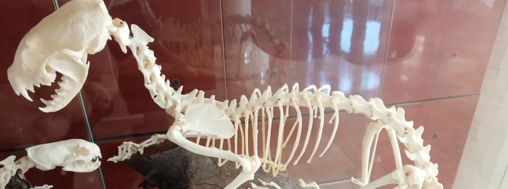
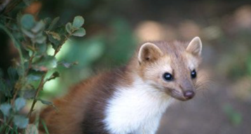
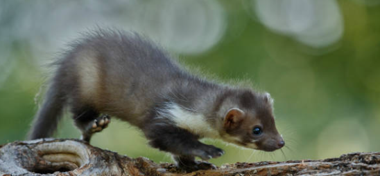
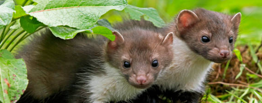

Garduña




La garduña es una especie de mamífero carnívoro de la familia Mustelidae. Es un depredador nocturno de tamaño mediano.
En estado adulto, la garduña mide entre 40 y 50 cm de longitud, la cola mide entre 21 y 27 centímetros, y su peso oscila entre 1 y 2 kg.
Se encuentra en el sur y centro de Europa hasta los países bálticos, Anatolia y los países mediterráneos del este, incluyendo las islas de Creta, Rodas y Corfú, Cáucaso, Irán, Irak, Mongolia, vertiente norte del Himalaya y China. Hay también una población establecida en Wisconsin (Estados Unidos) proveniente de ejemplares huidos del comercio de mascotas.
Aquí puedes añadir más información para tu exposición: partes del fémur, funciones, curiosidades, etc.
← Volver